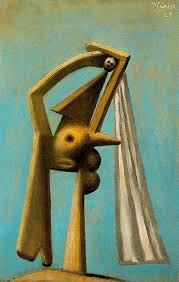
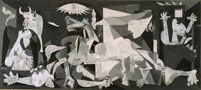

Pablo Picasso
Pablo Picasso nacque a Malaga, nel sud dell'Andalusia, il 25 ottobre 1881, in Plaza de la Merced.Al giovane Pablo, in ogni caso, furono imposti numerosissimi nomi, tutti in onore di vari santi e parenti: Pablo Diego José Francisco de Paula Juan Nepomuceno Maria de los Remedios Cipriano de la Santísima Trinidad Ruiz y Picasso, dei quali gli ultimi due tratti dal padre e dalla madre, ai sensi della regola del "doppio cognome" vigente in Spagna.
 